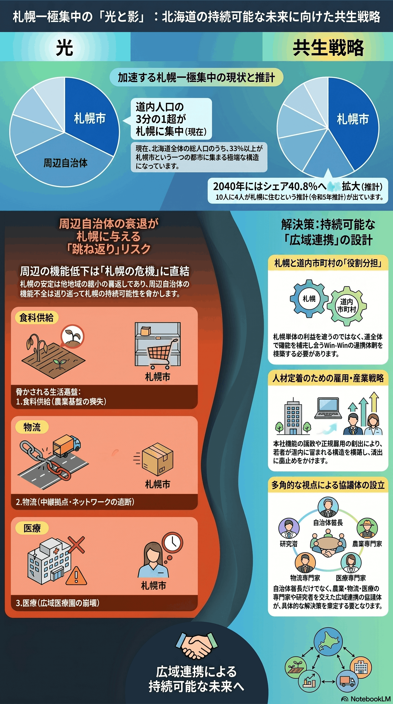

人口減少・高齢化
世代単位
道内人口の札幌一極集中
北海道の人口が札幌に集中し、道全体の縮小と表裏一体で進む。

背景
札幌の相対的な安定は、道内他地域の急速な縮小の裏返しでもある。周辺自治体の機能低下は、食料・医療・物流などを通じて札幌自身の持続性にも跳ね返る。
主要データ
| 道人口に占める札幌のシェア（現状） | 3分の1超 |
|---|---|
| 2040年のシェア | 40.8% |
事実
- 北海道の総人口の3分の1超が札幌市に集中している。
- 2040年には札幌のシェアが40.8%まで高まると推計されている。
解釈
札幌の相対的な安定は道内他地域の縮小の裏返しでもある。周辺自治体の機能低下は、医療・物流・食料供給などを通じて札幌にも跳ね返る。
提案
- 札幌と道内市町村の役割分担・連携（札幌だけの最適化は持続しない）。
- 本社機能・正規雇用の誘致による人材の道内定着。
検討体制・メンバー
札幌市と北海道庁、道内市町村による広域連携の協議体が要となる。検討会には地域経済・地理の研究者、農業・物流・医療など道全体を支える産業の代表、近隣自治体の首長級を加え、札幌と道内のWin-Winを設計する。
AIノート
AIの貢献度は小〜中。人口移動の分析や、遠隔医療・物流最適化で広域の機能維持を補える。ただし一極集中は雇用・進学の構造に根ざすため、AIは現状把握と個別サービス改善にとどまり、流れ自体を変える力は限定的。